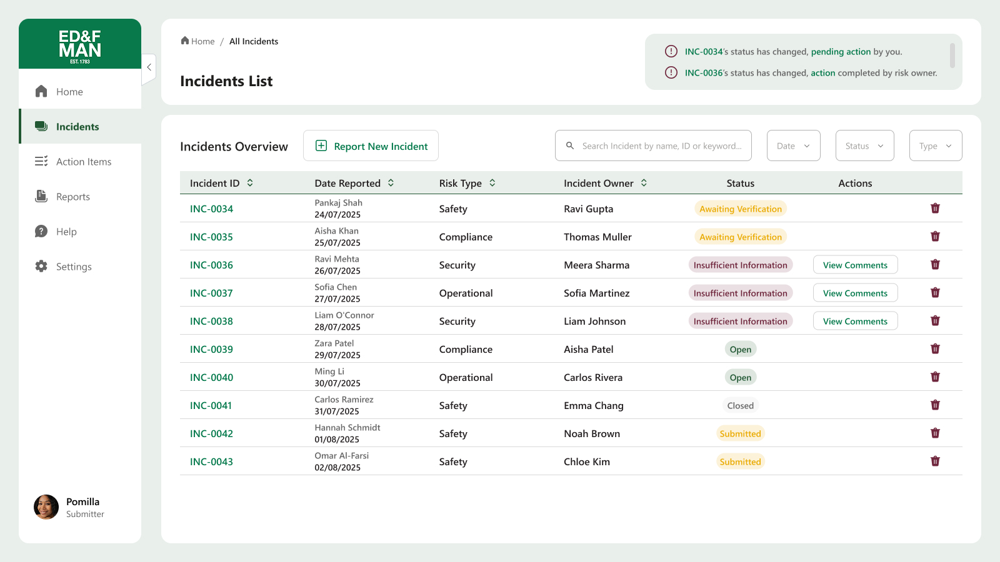
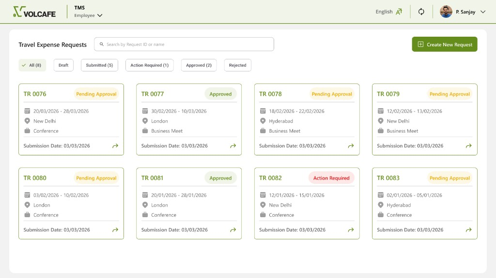

Risk Incident Management
ED&F Man Capital Markets
End-to-end incident lifecycle redesign for submitters and reviewers across 14 countries.
↓ 32% bounce-backs · clearer review loops · shared action tracking
View case study →

Travel Management System
Volcafe
Two-phase travel & expense system connecting proposed budgets to actual spend.
↓ 35% manual effort · faster post-trip reconciliation · mobile-ready flows
View case study →

Fintech Design System
Enterprise Fintech
Atomic design system — components, states, and wayfinding patterns for scalable fintech products.
Reusable UI kit · consistent forms & navigation · documented component states
View case study →

Additional works
Selected projects
Some interesting works from past
Archive of prior work
View work →